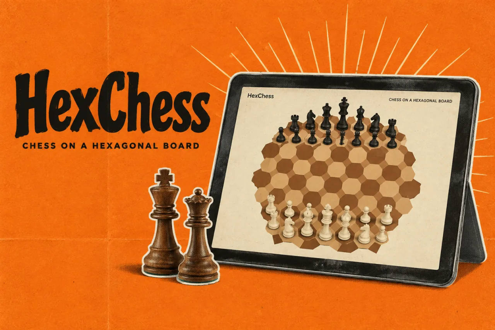

HexChessProduct story · 4 min read
Learning chess on a different board.
A 91-cell chess variant designed around guided learning, readable interaction, and games that survive interruptions.
Read the case study

The original playing room: a 91-cell board, legal-move guidance and game controls.
View full size ↗01 The problem
How can the board become part of the teaching?
A hexagonal board changes movement patterns enough to make familiar chess knowledge unreliable. I designed HexChess around learning by trying: clear targets, feedback on moves, and a route into untimed practice instead of expecting a beginner to absorb a rules document first.
Designed for Chess player learning a different board. Understand a movement rule and try it safely.
User context Design assumption
Recognising familiar pieces in an unfamiliar hexagonal geometry.
- The friction
- Abstract directions do not automatically translate into a playable move.
- Design implication
- Teach on the board, then open guided practice.
Example situation · illustrative scenario. Imagine recognising the pieces but no longer trusting your instinct for where they can move. A rules page can explain the geometry; a first move makes it tangible.
02 The outcome
From the first lesson into play.
I connected the 91-cell board to six guided lessons, practice, saved sessions and correspondence sharing. Legal-move feedback helps explain the unfamiliar geometry where the move happens. I have not measured whether the lessons improve learning.
More about the experience
- Understand the board. The playing surface carries the movement explanation.
- Try a move. Guidance stays in the context of play.
- Continue. Practice and a saved game support a return to the board.
03 The direction
Learning through a move
Practice makes a rule concrete. Six guided piece lessons lead into an untimed first game with move highlights.
Product artifact · six guided lessons
My direction. I brought explanation into the interaction: a target, an attempt, feedback, and a recoverable retry.
Process and product scope
I connected a six-part introduction to the first practice game. A learner should encounter a rule on the board, try a move, and carry that understanding into play.
I treated interruption and sharing as parts of the experience. A saved game needs a clear return path, and a correspondence link needs to explain that the other person replies with an updated game rather than joins a live room.
- 91
- board cells
- 6
- guided piece lessons
- Offline
- after first successful load
- See
Give the lesson one clear target.
- Try
Let the learner select and move.
- Recover
Explain a wrong attempt without ending the lesson.
- Play
Transfer the movement into beginner practice.
04 Design decisions
Teach the board through the next move.
Open a decision to see the reasoning and trade-off.
01Make movement teachable on the board
Lessons give a specific target, neutral markers, retries, and progress based on actual practice.
Why this matters. A learner can connect a rule to a move instead of memorising abstract directions.
The trade-off. Move previews and legal moves serve different purposes; the interface must explain when inspection ignores king safety.
02Keep assistance appropriate to the context
Hints and takebacks belong to computer practice; human games remove assistance and pause controls.
Why this matters. Learning support should not silently change the rules of a friendly competitive game.
The trade-off. Assistance rules need to be clear to both players; the interface is not evidence of tournament-grade enforcement.
03Describe sharing accurately
Correspondence links carry move history and require an updated reply after a turn.
Why this matters. People should understand whether they are entering a synchronized room or receiving a game snapshot.
The trade-off. Long histories create long URLs, and a shared snapshot is readable by anyone given the link.
05 Reflection
Teach the next useful action, then give someone room to try it.
I would follow a new player from a lesson into their first game. A completed tutorial is less useful evidence than seeing them recognise a move, recover from a mistake and continue without an explanation.
What I would evaluate next proposed work
- observe a new player complete a piece lesson and use the same movement unaided in practice.
- reload during a game, resume offline, and exchange a correspondence reply while confirming both players understand the snapshot model.
Follow the driver. Keep the race in view.